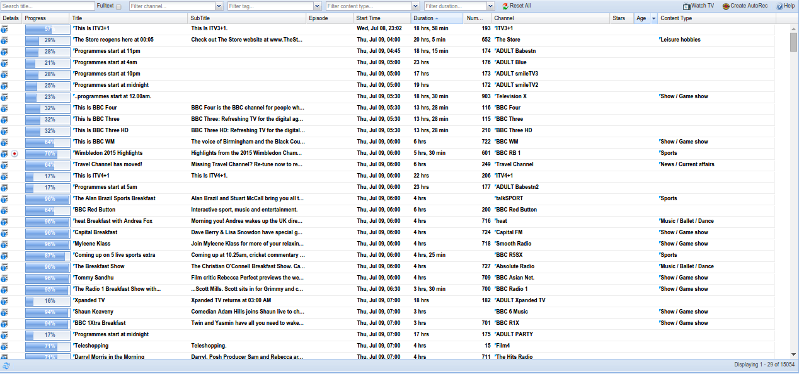
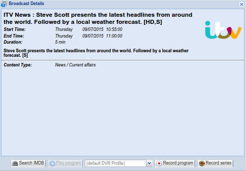
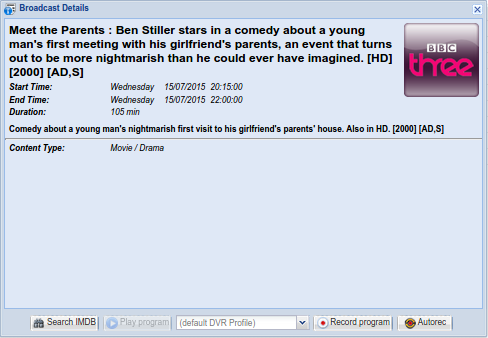
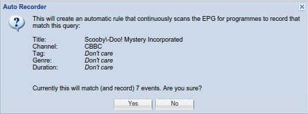

Electronic Program Guide
Tvheadend has a built-in Electronic Program Guide. The EPG is an in-memory database populated with all the information about events received from the DVB networks over-the-air or from external grabbers such as XMLTV.
The EPG tab displays a filterable grid containing all events, sorted based on start time.

Menu Bar/Buttons
The following functions are available:
Filtering (or searching)
In the EPG top tool bar you can access five input fields. These are used to filter/search for events. The form uses implicit AND between the input fields. This means that all filters must match for an event to be displayed.
| Filter | Function |
|---|---|
| Search title… | Only display events that match the given title. The filter uses case-insensitive regular expressions. If you don’t know what a regular expression is, this simply means that you can type just parts of the title and filter on that - there’s no need for full, exact matching. If the fulltext checkbox is checked, the title text is matched against title, subtitle, summary and description. |
| Filter channel… | Only display events from the selected channel. Channels in the drop down are ordered by channel number and can be filtered (by name) by typing in the box. |
| Filter tag… | Only display events from channels which are included in the selected tag. Tags are used for grouping channels together - such as ‘Radio’ or ‘HDTV’ - and are configured by the administrator. You can start typing a tag name to filter the list. |
| Filter content type… | Only display events that match the given content type tag. Most DVB networks classify their events into content groups. This field allows you to filter based on content type (e.g. “Sports” or “Game Show”). Supported tags are determined by your broadcaster. Again, simply start typing to filter the entries if you have a long list to choose from. |
| Filter duration… | Only display events that fall between the given minimum and maximum durations. This allows you to filter for or against, say, a daily broadcast and a weekly omnibus edition of a programme, or only look for short news bulletins and not the 24-hour rolling broadcasts. |
Title, Channel, Tag and Content Type are dependent on your configuration and on what your broadcaster sends. Options for the Duration are as follows:
| Filter Range | Example Purpose |
|---|---|
| 00:00:01 to 00:15:00 | Very short news bulletins, children’s programmes, etc. |
| 00:15:01 to 00:30:00 | Short programmes, e.g. daily soap operas |
| 00:30:01 to 01:30:00 | Medium-length programmes, e.g. documentaries |
| 01:30:01 to 03:00:00 | Longer programmes, e.g. films |
| 03:00:00 to no maximum | Very long programmes, e.g. major sporting events |
So, if you only want to see Movies from your available HD channels, you would select ‘HDTV’ in the [Filter tag…] field, and select ‘Movie / Drama’ in the [Filter content type…] field. If you wish, you could then further limit the search to programmes of between 90 minutes and 3 hours by selecting ‘01:30:01 to 03:00:00’ in the [Filter duration…] field.
Note that you don’t have to press a ‘Search’ button: the grid immediately updates itself as you change the filters.
You can clear an individual filter by simply deleting its contents, or by selecting ‘(Clear filter)’ as appropriate on all except the title filter. If you want to clear all filters, just press the [Reset All] button.
Buttons
The following buttons are also available:
| Button | Function |
|---|---|
| Reset All | Clears all search filters. |
| Watch TV | Launches Live TV via the VLC plugin (see below). |
| Create Autorec | Creates an auto-recording rule based on the current filter criteria (see below). |
| Help | Display this help page. |
Grid Items
The main grid items have the following functions:
Details : Displays the current status of a recording event for this programme if one applies:
 - the programme is scheduled for recording
- the programme is scheduled for recording- - the programme is currently recording
- You can also click on the information icon
 to call up more detailed
information about an event.
to call up more detailed
information about an event.
Progress : A bar graph display of how far through a programme we currently are.
Title : The title of the programme. You can automatically set a filter to the value of this field by clicking on it (e.g. click on ‘Daily News’ will automatically filter the whole grid to only show programmes with the same name).
SubTitle : The subtitle of the programme, if gien by your EPG provider. Note that some (notably, UK) providers use this for a programme synopsis instead of a true subtitle.
Episode : Episode number, if given by your EPG provider.
Start Time : The scheduled start time of the programme.
End Time : The scheduled end time of the programme.
Duration : The scheduled duration (i.e. start time to end time) of the programme.
Number : The channel number of the broadcasting channel, if defined.
Channel : The name of the broadcasting channel. You can automatically set a filter to the value of this field by clicking on it (e.g. click on ‘Channel 4 HD’ will automatically filter the whole grid to only show programmes from that channel).
Stars : Text…
Age : Text…
Content Type : Any content/genre information as provided by the EPG provider. You can automatically set a filter to the value of this field by clicking on it (e.g. click on ‘Movie/Drama’ will automatically filter the whole grid to only show programmes of the same type).
Event details and recording
If you click on a single event, a popup will display detailed information about the event. It also allows you to schedule the event for recording by clicking on the [Record program] button.
For EPG providers that supply series link information there will also be a [Record series] button that will record all entries in the series.
For events without any series link information, an [Autorec] button will be provided to create a pseudo-series link using the autorec feature.
 
If you schedule any kind of recording from this point, you can choose a specific DVR profile that will apply to the recording or autorec rule. This will normally show as (default), but you can define different profiles in the Configuration -> Recording -> Digital Video Recorder tab. This allows you to set, for example, more post- broadcast padding for a channel that always runs late, or perhaps define a different post-processing command to strip adverts out on a commercial channel.
You will also see a Search IMDB link to look for the programme by name on imdb.com, and a Play link to watch a programme that’s already in progress. This second link downloads a playlist file (XSPF or M3U depending on your startup options); if your system is configured for it, this will automatically launch an appropriate player, otherwise you will need to manually open the playlist to start watching (normally a double-click on the downloaded file).
To close the popup, just click on the [X] window button. The popup isn’t modal, so you don’t have to close it before doing something else, and you can open as many detailed information popups as you want.
Autorecordings
Should you wish to record all events matching a specific query (to record your favourite show every week, for example) you can press the [Create AutoRec] button in the top toolbar.
A popup with details about the to-be-created autorecording rule needs to be confirmed before the rule takes effect.

You can change or delete the autorec rules in the Digital Video Recorder tab. Use that editor if you temporarily want to disable an autorecording or make adjustments to the channel, tag, or similar.
Watch TV
If you want to watch live TV in the web UI, the [Watch TV] button will pop up a VLC plugin window (if you don’t have the plugin installed a direct URL should be provided to load into your preferred media player).